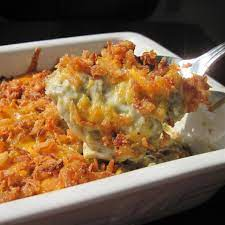

Green Bean Casserole

Description
This is basically our standard green bean casserole recipe with some minor modifications I've made over the years.
It's ALWAYS the first to disappear at potlucks when there are other versions of green bean casseroles and people
often ask why it seems to taste so much better than the original one on the French's can.
Ingredients
- 2 (14.5 ounce) cans green beans, drained
- 1 (10.75 ounce) can condensed cream of mushroom soup
- 1 (6 ounce) can French fried onions
- 1 cup shredded Cheddar cheese
Steps
- Step 1: Preheat oven to 350 degrees F (175 degrees C).
- Step 2: Place green beans and soup in a large microwave-safe bowl. Mix well and heat in the microwave on HIGH until warm (3 to 5 minutes).
- Step 3: Stir in 1/2 cup of cheese and heat mixture for another 2 to 3 minutes.
- Step 4: Transfer green bean mixture to a casserole dish and sprinkle with French fried onions and remaining cheese.
- Step 5: Bake in a preheated 350 degrees F (175 degrees C) oven until the cheese melts and the onions just begin to brown.